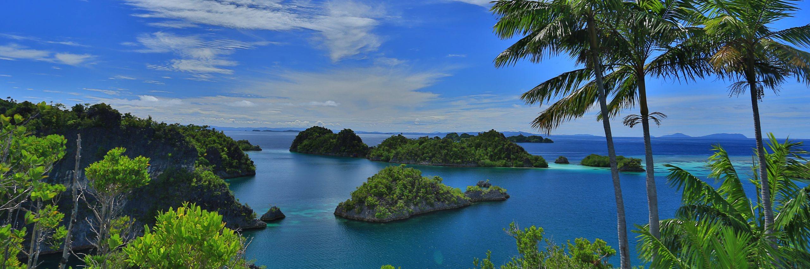

- Raja Ampat

Produk Terbaru
Deskripsi tempat indah di atas bukanlah mimpi, semuanya nyata dan benar-benar ada. Kepulauan Raja Ampat, Papua Barat, Indonesia-lah tempatnya. Kepulauan yang berada di ujung barat laut pulau Papua ini memang sudah dikenal luas sebagai ‘tambang emas’ bagi para penggila petualangan. Sedangkan, bagi para penyelam dalam dan luar Indonesia, Raja Ampat dianggap sebagai surga yang tidak dapat diungkapkan kata-kata. Satu-satunya cara untuk membuktikan berbagai pendapat ini adalah dengan datang langsung menikmati ‘sang mutiara’ di ujung Papua ini